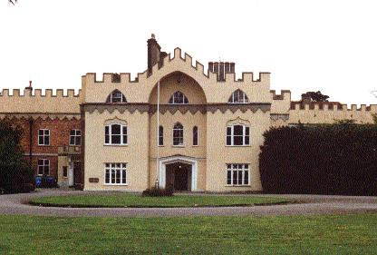
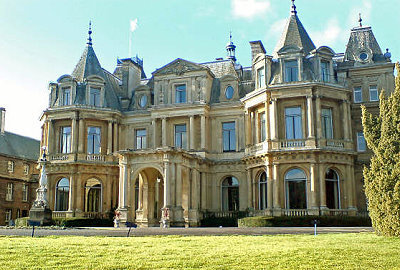

A
A1: Hampden House, Great
Hampden, Buckinghamshire

HAMMER HOUSE OF HORROR: Title sequence (1980)
The house appears in both the opening and closing title sequence.
HAMMER HOUSE OF HORROR: Witching Time (Don Leaver:
1980)
Mary (Prunella Gee) visits a local church to talk to the Rector
(Lennard Pearce) about the witch, Lucinda.
HAMMER HOUSE OF HORROR: The Thirteenth Reunion (Peter
Sasdy: 1980)
Ruth Cairns (Julia Foster) investigates a mysterious death at the
Chesterton Clinic.
HAMMER HOUSE OF HORROR: The Two Faces of Evil (Alan
Gibson: 1980)
Janet (Anna Calder-Marshall), Martin (Gary Raymond) and David Lewis
(Paul Hawkins) stop at a crossroads on the way to their holiday. Janet
Lewis wakes up in hospital after a car crash. Her husband and son are
also in the hospital. After answering questions from P.C. Jenkins (Mike
Savage), she and her son leave the hospital watched by the sister
(Pauline Delany).
HAMMER HOUSE OF HORROR: Children of the Full Moon (Tom
Clegg: 1980)
Sarah (Celia Gregory) finds sanctuary from the creatures of the night
in a mysterious mansion.
A2: Halton House, RAF
Halton, Halton nr. Wendover

Photo: Geoff Dodd
THE SAINT: The Abductors (Jeremy Summers:
??)
Madeline is kidnapped and taken in a Citroen to Chateau Bellville.
A3: Wendover,
Buckinghamshire
GIDEON’S WAY: Morna (Cyril Frankel, October
1964)
Gideon and David Keen drives to Wendley (High Street, Wendover) to help
the Chief Inspector Budd with the case. Later Gideon interviews Green
and Usher at Wendley police station.
(Identified by Geoff Dodd, April 2007)
To B